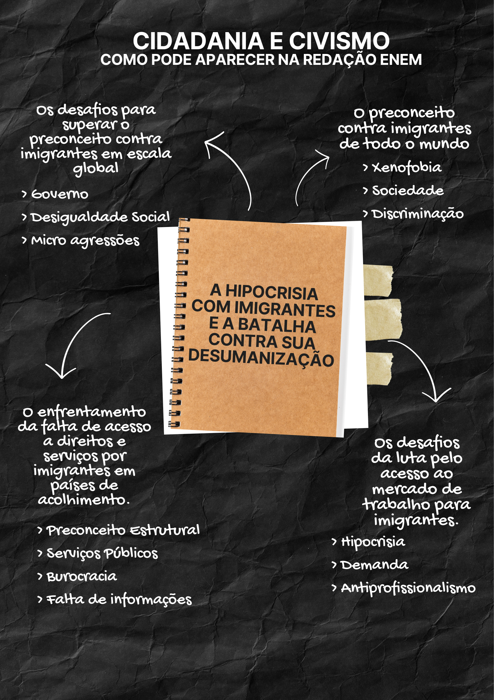

Cidadania e Civismo

1) Argumento de autoridade
Para o sociólogo Zygmunt Bauman, “o estrangeiro é uma figura que incomoda porque carrega em si o desafio do convívio com o diferente”. Essa reflexão ajuda a compreender a raiz simbólica da intolerância contra imigrantes: mais do que fatores econômicos, o que alimenta essa rejeição é o medo do desconhecido e a insegurança frente ao que foge à norma social estabelecida. Isso explica por que profissionais estrangeiros de elite são aceitos, enquanto imigrantes vulneráveis são alvos de exclusão.
Para o sociólogo Zygmunt Bauman, “o estrangeiro é uma figura que incomoda porque carrega em si o desafio do convívio com o diferente”. Essa reflexão ajuda a compreender a raiz simbólica da intolerância contra imigrantes: mais do que fatores econômicos, o que alimenta essa rejeição é o medo do desconhecido e a insegurança frente ao que foge à norma social estabelecida. Isso explica por que profissionais estrangeiros de elite são aceitos, enquanto imigrantes vulneráveis são alvos de exclusão.
2) Argumento histórico
O preconceito contra imigrantes não é recente. Na história do Brasil, por exemplo, políticas de “branqueamento” da população favoreceram a entrada de europeus, enquanto afrodescendentes e indígenas foram sistematicamente marginalizados. Essa herança reflete-se ainda hoje, com a valorização de profissionais estrangeiros de elite, em contraste com o preconceito contra imigrantes pobres e racializados.
O preconceito contra imigrantes não é recente. Na história do Brasil, por exemplo, políticas de “branqueamento” da população favoreceram a entrada de europeus, enquanto afrodescendentes e indígenas foram sistematicamente marginalizados. Essa herança reflete-se ainda hoje, com a valorização de profissionais estrangeiros de elite, em contraste com o preconceito contra imigrantes pobres e racializados.
3) Argumento de exemplificação
Muitos imigrantes que atuam no Brasil como médicos, engenheiros ou técnicos vieram fugindo de guerras, crises econômicas ou exploração colonial, como no caso de haitianos e venezuelanos. Apesar de sua contribuição ao desenvolvimento nacional, são alvo de preconceito, violência e discursos de deportação, enquanto profissionais estrangeiros de países centrais são exaltados.
Muitos imigrantes que atuam no Brasil como médicos, engenheiros ou técnicos vieram fugindo de guerras, crises econômicas ou exploração colonial, como no caso de haitianos e venezuelanos. Apesar de sua contribuição ao desenvolvimento nacional, são alvo de preconceito, violência e discursos de deportação, enquanto profissionais estrangeiros de países centrais são exaltados.
4) Argumento de comparação
A sociedade demonstra hipocrisia ao aceitar calorosamente estrangeiros altamente qualificados, exaltando suas competências, enquanto imigrantes em situação de vulnerabilidade são vistos como ameaça. Essa contradição escancara o viés seletivo com base em classe, origem e raça.
A sociedade demonstra hipocrisia ao aceitar calorosamente estrangeiros altamente qualificados, exaltando suas competências, enquanto imigrantes em situação de vulnerabilidade são vistos como ameaça. Essa contradição escancara o viés seletivo com base em classe, origem e raça.
5) Argumento de raciocínio lógico
Se tanto imigrantes vulneráveis quanto profissionais estrangeiros contribuem economicamente para o país, a rejeição seletiva ao primeiro grupo revela que o problema não é econômico, mas sim social e cultural, alimentado por preconceitos estruturais. Logo, o combate à hipocrisia passa pela revisão crítica de discursos sociais e políticos normalizados.
Se tanto imigrantes vulneráveis quanto profissionais estrangeiros contribuem economicamente para o país, a rejeição seletiva ao primeiro grupo revela que o problema não é econômico, mas sim social e cultural, alimentado por preconceitos estruturais. Logo, o combate à hipocrisia passa pela revisão crítica de discursos sociais e políticos normalizados.